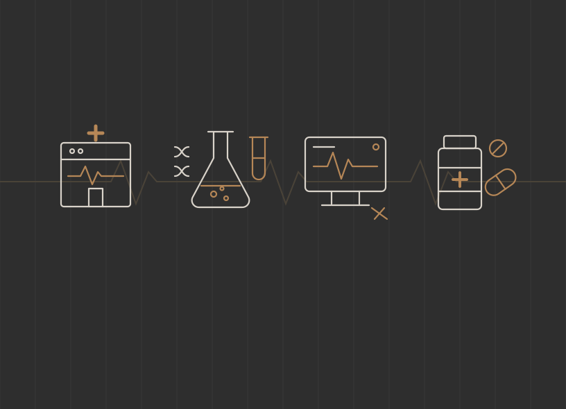

Services
& Diagnostics
& Distribution
Healthcare Services
HEALTHCARE
The quarter in brief
Healthcare enters the fourth quarter of 2026 with health systems, distributors and public strategic buyers setting the pace, and with private equity completing fewer and more carefully underwritten transactions. Private equity closed roughly 337 healthcare services deals in the first half, a pace that would make 2026 the slowest year since 2017, while medtech deal value reached $36.5 billion over the same six months and pharma and life sciences recorded its strongest quarter since 2020. Demand underneath the deal market is steady, with national health spending running 6.8% above last year in July and projected to reach nearly $9.0 trillion by 2034.
Deal market: strategic buyers are active while private equity completes fewer deals
Private equity healthcare services deal value was $17.8 billion in the first half of 2026, 7.3% below the prior year, and the roughly 337 transactions in the period annualize to 674 against an average of 903 a year between 2018 and 2024 (PitchBook, Q2 2026 Healthcare Services Report; Fierce Healthcare, August 2026). Physician practice management accounts for most of the decline, with 71 deals in the second quarter against 111 a year earlier, while ancillary and outsourced services such as surgery centers, staffing and laboratories are tracking only 4.9% below 2025 (Becker's ASC Review). PwC counted 300 health services transactions in the first quarter and about $28 billion of value through May 31 (PwC via Fierce Healthcare, June 17, 2026).
Deal activity in the rest of healthcare has been stronger than in provider services, and pharma and life sciences deal value exceeded $65 billion in the first quarter, with 16 transactions of $1 billion or more, the strongest quarter since 2020 (PwC via Fierce Biotech). Medtech followed a decade-high 2025 with $36.5 billion of deal value in the first half (PwC via MedTech Dive), and hospitals and health systems announced 18 transactions in the second quarter, including three mega-mergers (Kaufman Hall, July 13, 2026).
Financing became more expensive during the third quarter, when the Federal Reserve raised its target range by a quarter point to 3.75% to 4.00% on September 16 (Federal Reserve), the 10-year Treasury yielded 5.24% on October 1 (US Treasury), and direct lenders widened buyout loan spreads to an average of 509 basis points over the benchmark rate in the second quarter from 474 in the first (PitchBook, Q2 2026 US PE Breakdown).
Demand: spending and employment continue to grow
National health spending grew 6.8% in the year to July 2026, after a revised 7.1% in June, and represented 18.4% of GDP (Altarum Health Sector Economic Indicators, September 28, 2026). CMS projects nearly $9.0 trillion of spending in 2034, or 20.6% of GDP, on average annual growth of 5.4% (CMS National Health Expenditure fact sheet). Healthcare employers added 17,000 jobs in September against a twelve-month average of 33,000 (Bureau of Labor Statistics, October 2, 2026). Spending growth supports demand across the sector, and a particular business captures it through its payer rates, labor costs and collections.
Medicare rates for 2027 are proposed and the Medicaid changes begin in January
State review of healthcare transactions now reaches private equity and management companies
California's AB 1415 took effect on January 1, 2026 and brings private equity groups, hedge funds and management services organizations into the state's transaction notice requirements (Nixon Peabody). Oregon's SB 951 bars management services organizations from majority ownership or control of medical practices, with existing arrangements required to comply by January 1, 2029 (Reed Smith). Massachusetts, Indiana, New Mexico, Rhode Island and Washington have enacted notice or approval requirements, and Maine's 180-day notice and approval regime begins January 1, 2027 (BakerHostetler).
Restrictive covenants for clinicians are also narrowing, and Virginia's ban on noncompetes for healthcare professionals, effective July 1, 2026, retains an exception for the sale of a business (DLA Piper). Federal tax law keeps a top long-term capital gains rate of 20% and an estate and gift exemption of $15 million per person (Tax Foundation; HBK CPAs & Consultants). A seller's proceeds also depend on entity and deal structure, the portion of the price taxed as ordinary income, the net investment income tax and state tax, and on the ownership and review requirements of each state involved.
How reimbursement and trade policy reach the value of an individual business
Program-wide payment updates are the starting point for a buyer's analysis. Buyers then model the company's own payer contracts, billing codes, service mix and geography, because a Medicare Advantage plan payment update reaches providers only through their individual contracts and an aggregate home health estimate differs from the rate change at any one agency.
Pharmaceutical tariffs in detail
The April 2 proclamation sets a 100% default rate on covered patented products and ingredients, effective July 31 for the companies named in Annex III and September 29 for others. Approved onshoring treatment carries a 20% rate that rises to 100% on April 2, 2030. Specified products from the European Union, Japan, South Korea, Switzerland and Liechtenstein receive 15% unless a lower rate applies, and the United Kingdom framework starts at 10%, with any reduction contingent on a further agreement and notice. Companies with qualifying most-favored-nation pricing and onshoring arrangements pay zero through January 20, 2029, and further conditional product exclusions apply. Generics, including biosimilars, remain excluded (White House proclamation, clauses 3 to 6).
In an acquisition, the importer's eligibility and agreement terms, including any change-of-control provisions, determine whether a reduced rate carries over to the new owner, and buyers will ask to see the agreement itself.
Health systems are buying access points and sponsors are trading platforms
Patient volumes are growing in the outpatient settings that founder-owned providers occupy, and HCA reported emergency room visits up 3.6% and equivalent admissions up 2.7% on a same-facility basis in the second quarter (HCA Healthcare). Concentra saw 2.6% more visits a day at 4.6% more revenue per visit (Concentra), and U.S. Physical Therapy averaged 33.5 visits per clinic per day at a net rate of $107.59, although therapist salaries rose to 57.9% of revenue from 56.6% (U.S. Physical Therapy).
Urgent care is consolidating toward hospital ownership, with the 100 largest operators holding 6,056 of the country's 14,655 centers and 55.9% of those locations affiliated with a hospital (Journal of Urgent Care Medicine, May 29, 2026). HCA bought 13 CommunityMed centers in North Texas in February, 17 Urgent Care Group clinics in the Carolinas in June and the 40-center Texas MedClinic in August (Becker's ASC Review; Healthcare Dive). Scale without hospital backing has been harder to sustain, and venture-backed Carbon Health filed for Chapter 11 in February with 96 clinics and more than $100 million of debt (Secured Finance Network).
In eye care, EyeCare Partners agreed on September 28 to sell its optometry business of more than 300 offices to MyEyeDr., with the proceeds going to debt reduction (EyeCare Partners). Independent practice continues to shrink, and 42.2% of physicians worked in physician-owned practices in the AMA's latest survey against 60.1% in 2012 (AMA survey via Medical Economics).
Care in the home drew the largest provider transactions of the year, with Kinderhook agreeing to take Enhabit private at an enterprise value of about $1.1 billion (HLTH), and Addus HomeCare agreeing to pay about $275 million for AccentCare's personal care division, which generates about $280 million of annual revenue in ten states (Addus HomeCare). Addus grew personal care revenue 6.8% on a same-store basis with rate increases of 9.9% in Texas and 3.9% in Illinois (Addus second-quarter results).
Dialysis and emergency medical services are growing more slowly. DaVita reported normalized non-acquired treatment growth of 0.3% (DaVita), and Fresenius Medical Care reported US same-market treatments down 0.9% after exiting about 100 clinics (Fresenius Medical Care). Global Medical Response raised $478.7 million in its May initial public offering at a valuation of about $3.35 billion (JEMS), and Congress extended the Medicare ambulance add-on payments through December 31, 2027 (EMS1).
Disclosed prices are read alongside the ownership interest acquired
U.S. Physical Therapy paid $37.6 million for interests of 50% to 70% in three businesses with about $27.0 million of combined annual revenue. Those are prices for partial interests, so a comparison with a whole-company sale has to account for the share acquired, debt, the economics the founders retain and EBITDA (U.S. Physical Therapy; investor presentation, May 2026).
The reimbursement calendar bears on price in each of these trades, and Medicare's proposed 2027 dialysis rule would raise total payments 1.1% (CMS), and Acadia Healthcare, whose adjusted EBITDA fell to $149.2 million from $201.8 million, has named Medicaid work requirements and labor costs as risks to behavioral health volumes (Acadia Healthcare). Buyers are paying most readily for in-network commercial revenue, dense local footprints and clinicians who stay after closing.
Each care model is valued on different evidence
What this means for owners
A practice with $4 million of EBITDA, diversified referrals, durable clinician coverage and proven economics at new sites can attract interest as a platform. The same EBITDA produced largely by the founder, or resting on one fragile reimbursement stream, is more likely to be valued as an add-on or to carry contingent consideration. Owners who assemble provider, site, payer and referral schedules before setting price expectations enter those conversations better prepared, and a commercially insured patient mix supports value when realized rates, collections and retention support the earnings.
Research spending has turned up and laboratories are selling to the national networks
Clinical laboratories are consolidating into Labcorp and Quest through hospital outreach purchases and sales by independent owners. Quest grew revenue 10.2% in the second quarter on 13.1% more requisitions (Quest Diagnostics). Labcorp spent $528.6 million on acquisitions in the first half, recording $250.0 million of acquired assets for Empire City Laboratories and $165.0 million for the Parkview Health outreach laboratory (Labcorp Form 10-Q), after paying about $194 million for Community Health Systems' outreach laboratories (Labcorp, December 2, 2025). Independent laboratories number 7,824 of the 301,284 CLIA-certified sites in the country (CMS, September 2026).
Medicare payment is the open question for laboratory owners, because fee cuts under the Protecting Access to Medicare Act have been delayed through 2026, and reductions of up to 15% a year could resume in 2027 unless Congress passes the RESULTS Act (Association for Diagnostics & Laboratory Medicine).
Outsourced research has recovered from two slow years, with IQVIA's net bookings up 19% (IQVIA), ICON reporting a 22% sequential rise in requests for proposal (ICON), Medpace growing revenue 17.2% (Medpace) and Charles River posting its best organic growth since 2023 (Charles River Laboratories). Biotech venture funding reached at least $9.1 billion in the first half (BioPharma Dive), and Thermo Fisher described the US academic and government market as stabilizing (Thermo Fisher call summary). Congress has kept the 15% cap on NIH indirect costs blocked, although the fiscal 2027 budget request proposes it again (Congressional Research Service).
Private equity sponsors continue to lead the consolidation of clinical research sites. Headlands Research, owned by THL, bought the two-site Clinical Trials Research in California in June (Headlands Research), and Summit Clinical Research added Dallas Research Institute to its Pinnacle network in September (Summit Clinical Research).
Trade policy changes manufacturing economics by product, origin and company agreement, and buyers verify tariff eligibility, pass-through and change-of-control terms (White House proclamation; detail on page 5). The BIOSECURE Act became law in December 2025 (Akin), and Medicare moved skin substitutes to a flat rate of about $127 per square centimeter in 2026, a change CMS expects to reduce spending by $19.6 billion (Polsinelli).
Strategic buyers paid for consumables, data and laboratory volume
The largest buyers of 2026 were operating companies adding recurring product lines. Danaher's Leica Biosystems bought StatLab, a pathology consumables maker that Audax and Linden had built through nine add-on acquisitions in five years, and Merck KGaA agreed to buy Bio-Techne at an enterprise value of $11.3 billion, a 36% premium.
Contract development and manufacturing saw its own large trades, including Samsung Biologics' $1.8 billion agreement for peptide manufacturer PolyPeptide and Lone Star Funds' purchase of Lonza's capsules business, alongside new US capacity from Cambrex, PCI and Vetter (DCAT Value Chain Insights). Device design firms sold to manufacturers that want engineering in house, as the Resonetics and Currier purchases show, and NAMSA bought Labcorp's US medical device testing business in January (Medical Product Outsourcing).
Testing volume, research backlog and recurring products are valued separately
What this means for owners
A recurring consumables company earns its premium by demonstrating repeat orders, customer qualification and durable gross margin. A research business demonstrates executable backlog and continuity of investigators or technical staff, and a laboratory bridges billed revenue to cash by code and payer. Presenting the business on the evidence that fits its model serves an owner better than a single life sciences median, which conceals the reason a buyer would pay a premium.
Exposures to resolve before going to market
Laboratory owners can model the scheduled 2027 reductions to the Clinical Laboratory Fee Schedule test by test, which gives a more accurate result than a 15% cut applied to total revenue (CMS proposed rule). Research businesses can distinguish funded awards from proposals and cancellable work. Manufacturers can quantify the investment needed to fulfill committed production, because buyers value contracted earnings and give little credit for unused capacity.
Procedure demand is firm and consumables are outgrowing capital equipment
Device makers are reporting steady procedure volumes, with Stryker growing 9.0% organically in the second quarter (Stryker), Medtronic raising its organic growth guidance to between 7.25% and 7.75% (Medtronic) and Zimmer Biomet growing 4.0% (Zimmer Biomet). Hospitals are spending more readily on consumables than on installed equipment, and Steris grew healthcare service revenue 10% and consumables 9% while capital equipment grew 1% (Steris), and 41% of health system executives plan to cut capital spending (HFMA).
The same preference for consumables shows in instrument reprocessing, where Aspen Surgical bought Ruhof Healthcare, a maker of instrument-cleaning detergents with about $50 million of revenue, in January (Aspen Surgical).
Dental results diverged between distributors and manufacturers, as Henry Schein grew dental merchandise distribution 9.7% (Henry Schein) and Envista grew 5% (Envista via Pulse 2.0), while Dentsply Sirona's sales fell 4.1% with the Americas down 10.7% (Dentsply Sirona). Mitsui Chemicals agreed to buy Ultradent Products for $900 million (Becker's Dental Review).
Several of the largest distribution businesses changed ownership in the past year. Medline raised $6.26 billion in its December initial public offering and grew net sales 11.6% in the second quarter (Fierce Healthcare; Medline). Owens & Minor received $375 million in cash, a retained equity stake and a preferred return for its products and healthcare services segment (Owens & Minor), McKesson sold 13% of its medical-surgical unit for $1.25 billion (McKesson) and Cardinal Health spent $360 million on two home supply businesses (HME News).
In respiratory and home equipment, Teleflex sold its acute care and urology businesses to Intersurgical for $530 million and its component unit to Montagu and Kohlberg for $1.5 billion (MedTech Dive), Viemed grew revenue 23.9% on home ventilation (HME News) and Medicare is restarting competitive bidding for home medical equipment with contracts from 2027 (AAHomecare).
Tariffs have moved earnings up as well as down. The Supreme Court struck down the emergency-powers tariffs in February and importers began receiving refunds in April (Barnes Dennig), after which Medline booked a net benefit of $243 million and Stryker reversed $158 million of charges. The Section 232 investigation into medical devices remained open in September with no tariff imposed (iData Research), and the FDA's Quality Management System Regulation took effect on February 2 (Ropes & Gray).
Sponsors bought manufacturing platforms and strategics bought product lines
KKR's agreement to take contract manufacturer Integer Holdings private values the company at $5.7 billion, a 51.8% premium, and Danaher paid about 18 times estimated 2027 EBITDA for Masimo. Divestitures supplied much of the remaining activity, and Bain & Company counts them as 34% of strategic medtech deal value in 2025 (Bain & Company via Fierce Biotech).
Owens & Minor's announced terms combined $375 million of cash with a 5% retained equity interest and a preferred return, and the company also kept specified tax assets, so the cash figure alone understates what the seller received (Owens & Minor). Comparing distribution with manufacturing valuations requires the full consideration, the scope acquired and comparable earnings. Buyers of product companies will examine clearances, quality records, customer qualification and the exposure of the bill of materials to tariffs.
Protected economics matter more than the size of the business
What this means for owners
A manufacturer substantiates its regulatory status, quality history and the durability of customer qualification. A distributor shows contractual access, retention and cash conversion after inventory investment. Both benefit from identifying tariff exposure and presenting sustainable earnings after one-time refunds or reversals, because buyers will discount high recurring revenue when margins, working capital or customer access are fragile.
Reading the Owens & Minor transaction
The $375 million cash payment was accompanied by a 5% retained interest and preferred equity economics, and the seller also kept specified tax assets (Owens & Minor announcement). A comparison across sub-sectors therefore requires the full consideration, comparable EBITDA, debt, the scope acquired and normalized cash conversion.
Drug pricing reform is reshaping pharmacy while staffing returns to growth
Medicine spending is growing quickly while pharmacy margins shrink. Net spending reached $606 billion in 2025, up 10.6%, with GLP-1 and obesity drugs adding $14 billion (IQVIA Institute). Independent pharmacies numbered 18,960 in mid-2025 and reported their lowest gross profit in ten years (NCPA Digest), and 67% of owners surveyed report waiting 22 days or more for manufacturer refunds on drugs with negotiated Medicare prices (Drug Topics).
Negotiated Medicare prices have cut deepest in long-term care pharmacy, where Guardian Pharmacy Services grew revenue 2% while serving 8% more residents, and its chief executive said first-half revenue would have grown at a low double-digit rate without the price reductions (Guardian Pharmacy Services; call summary). BrightSpring attributed about $50 million of second-quarter pressure in its home and community pharmacy unit to the same cause (BrightSpring call summary), and a bankruptcy court approved the sale of Omnicare to GenieRx for $250 million in cash (CVS Health; Becker's Hospital Review).
Specialty pharmacy and infusion are growing fastest. BrightSpring's specialty and infusion revenue rose 30% to $2.9 billion (BrightSpring), and Option Care Health reported high-single-digit growth in acute therapies and named tuck-in acquisitions as a priority (Option Care Health; call summary). Neither of the bills to create a full Medicare home infusion benefit has been enacted (RxToolKit).
Congress enacted pharmacy benefit manager reform in February, under which Part D compensation must be delinked from list prices from 2028 and rebates passed through in full to employer plans from 2029 (Sidley Austin), and all three large managers have settled the FTC's insulin case on terms that include cost-plus pharmacy reimbursement (Truveris). State laws barring managers from owning pharmacies remain in litigation (Mintz).
Drug distributors continue to buy physician practice management organizations. Cencora completed its purchase of OneOncology in February (Cencora), and The Specialty Alliance, which Cardinal Health controls, acquired Solaris Health for about $1.9 billion in cash in November 2025, leaving Cardinal with about 76% of the alliance after closing (Cardinal Health Form 10-K). McKesson grew oncology and multispecialty revenue 33% (McKesson).
Healthcare staffing is growing again after three years of contraction, and Staffing Industry Analysts forecasts 1% growth to $39.0 billion in 2026 and 3% in 2027, led by locum tenens at 4% (Staffing Industry Analysts). AMN Healthcare grew nurse and allied revenue 11% (AMN Healthcare), and health care and social assistance had 1,359,000 open positions in August (Bureau of Labor Statistics JOLTS).
Scale mergers met resistance and buyers turned to specialist tuck-ins
Aya Healthcare ended its agreement to buy Cross Country Healthcare in December 2025 after an extended FTC review (Staffing Industry Analysts), and Knox Lane completed a $437 million purchase of the company in July at $13.25 a share against the $18.61 Aya had offered (Fierce Healthcare). Purchases of smaller specialist firms in pharmacy, infusion, perfusion and locum tenens closed throughout the year.
Buyers in this focus area say they pay for contracted, recurring revenue and for spare capacity they can fill. Strata Critical Medical cited recurring revenue, multi-year contracts and high customer retention in perfusion services, and Guardian describes pharmacy acquisitions as a way to use the capacity of its existing pharmacies. Staffing Industry Analysts counted 23 healthcare staffing transactions in 2025 against 17 in 2019, with buyers favoring diversified workforce platforms (Staffing Industry Analysts). Travel nurse gross margin of 19.9% in 2025 remains below the roughly 25% earned before the pandemic (Staffing Industry Analysts).
Buyers underwrite gross profit, cash conversion and contract durability
What this means for owners
Pharmacy revenue growth can reflect drug prices or an expensive therapy mix without producing equivalent gross profit or cash, and staffing revenue can recover while wage spreads remain weak. Owners in these businesses are best served by leading with a bridge from revenue to gross profit, EBITDA and cash, by showing contract retention, reimbursement lag and working capital needs, and by separating recurring specialist demand from strike, crisis and pandemic activity.
Physician alignment is part of the price
The Specialty Alliance acquired Solaris Health in November 2025 for approximately $1.9 billion in cash, and Cardinal Health owned approximately 76% of the alliance after closing. The alliance also issued units to physicians and management, and Cardinal's filing accounts for part of that value as compensation after the combination, so the units cannot simply be added to the cash price to estimate enterprise value (Cardinal Health Form 10-K, Note 2).
Public multiples show relative standing, and private prices are set business by business
These are enterprise values of public companies relative to reported trailing EBITDA. Differences in sub-sector, size, growth, earnings adjustments and business mix mean the chart cannot be discounted directly to a founder-owned company. The 13.6x median that private equity paid for healthcare services companies in 2025 (PitchBook via Becker's ASC Review), the 7.0x all-industry average for the second quarter of 2026 (GF Data via ACG) and the 5.8x median for transactions of $5 million to $50 million (IBBA and M&A Source Market Pulse) each describe a different sample and period, so they serve as separate reference points. Page 19 sets out how public trading, strategic control transactions, sponsor platforms and private add-ons relate to the value of a private company.
A private company's value is built from matched evidence
Illustration: the earnings a buyer accepts drive proceeds
Assume a company reports adjusted EBITDA of $7.0 million, and a buyer deducts $0.6 million for the recurring cost of replacing the owner and $0.4 million of earnings it considers unsustainable, leaving $6.0 million of accepted EBITDA. At an assumed multiple of 8.0x, enterprise value is $48.0 million. After $8.0 million of net debt and $2.0 million of seller fees, proceeds before tax are $38.0 million in a full cash sale with no other adjustments. Valuing the unadjusted $7.0 million at the same multiple would overstate enterprise value by $8.0 million.
Benchmark International's activity in these focus areas
Benchmark International has closed 12 transactions in these four focus areas over the trailing 24 months and is working on 39 further engagements as of October 1, 2026. Pharmacy and healthcare services is the largest group among the closed transactions, with five, followed by life sciences and diagnostics with four. Provider services leads the live engagements with 19, of which ten are in preparation for market. Across all four, 20 engagements are on the market, 13 are in preparation, four are in legal documentation and two are in discussion with a buyer.
Among the nine announced transactions listed below, six went to operating companies, one to a private equity firm and one to a group of private investors, and in one the buyer is undisclosed.
What buyers reward and what they discount
Across the four focus areas, acquirers pay the most for revenue that recurs under contract or clinical necessity and that is paid by a balanced mix of payers, and they discount revenue that depends on one reimbursement rate, one referral source or the owner personally. The specifics differ by focus area, and an owner or advisor can test a business against them well before a sale.
In the second quarter of 2026, 87% of surveyed transactions above $5 million received at least three offers, and lower-middle-market sales took about 11 to 12 months to close (IBBA and M&A Source Market Pulse). That survey covers all industries, and a healthcare sale can also require state notices or approvals, payer consents, enrollment actions and a billing and coding review, depending on structure and jurisdiction. Owners who prepare financial, concentration, license, accreditation and management evidence before approaching buyers shorten that path.
Should an owner transact now, prepare or wait?
The decision rests on expected net proceeds and execution risk for the owner's own business, and the quarter's largest transaction or a public-company median says little about either. An owner's desired liquidity, future role, control, clinician continuity and patient-care objectives come first, and they shape the choice of buyer and process.
What buyers will request first
Financial: three years of monthly statements, trailing results, an EBITDA bridge supported by evidence, revenue, margin and cash by site or service, and schedules of debt, leases, capital spending and working capital.
Commercial and clinical: payer, customer and referral concentration, contracts and their change-of-control terms, clinician employment, compensation, retention and credentialing, and growth and retention by patient or customer cohort.
Regulatory: licenses, accreditation, billing and coding reviews, audit history, quality metrics, privacy and cybersecurity controls, and the transaction requirements of each state involved.
Measuring the cost of waiting
A sale today can be compared with a later sale weighted by its probability, including interim cash distributions, the investment in preparation, taxes and the risk of lower earnings or pricing. A projected increase in EBITDA adds value for the owner only when it exceeds the capital the owner must fund and the added uncertainty of a later exit, and the comparison is most useful when it includes both a base case and a downside case for reimbursement and retention.
Considering a transaction in healthcare?
Our first step is always a confidential conversation exploring your goals, your company and your options.

Sources
PitchBook, Q2 2026 Healthcare Services Report; Fierce Healthcare, August 2026; Becker's ASC Review; PwC via Fierce Healthcare, June 17, 2026; PwC via Fierce Biotech; PwC via MedTech Dive; Kaufman Hall, July 13, 2026; LevinPro data via Becker's ASC Review; GF Data via ACG; IBBA and M&A Source Market Pulse; Federal Reserve; US Treasury; PitchBook, Q2 2026 US PE Breakdown; Summer 2026 Payor Technology Deep Dive; Altarum Health Sector Economic Indicators, September 28, 2026; CMS National Health Expenditure fact sheet; Bureau of Labor Statistics, October 2, 2026; CMS proposed rule; CMS rule register; CMS fact sheet; CMS final rate notice; HHS policy updates; Medicaid.gov; CMS provider-tax proposal; KFF, June 29, 2026; White House proclamation; Nixon Peabody; Reed Smith; BakerHostetler; DLA Piper; Tax Foundation; HBK CPAs & Consultants
HCA Healthcare; Concentra; U.S. Physical Therapy; Journal of Urgent Care Medicine, May 29, 2026; Becker's ASC Review; Healthcare Dive; Secured Finance Network; EyeCare Partners; AMA survey via Medical Economics; The Home as the Future of Senior Care; HLTH; Addus HomeCare; Addus second-quarter results; DaVita; Fresenius Medical Care; JEMS; EMS1; investor presentation, May 2026; Haven Health Management; Talkspace; PatientCare EMS Solutions; Ally Pediatric Therapy; CMS; Acadia Healthcare
Quest Diagnostics; Labcorp Form 10-Q; Labcorp, December 2, 2025; CMS, September 2026; Association for Diagnostics & Laboratory Medicine; IQVIA; ICON; Medpace; Charles River Laboratories; BioPharma Dive; Thermo Fisher call summary; Congressional Research Service; Outsourced Pharma Services; Headlands Research; Summit Clinical Research; White House proclamation; Akin; Polsinelli; StatLab; Worldwide Clinical Trials early-phase unit; Bio-Techne; Biocare Medical; Clario; Empire City Laboratories; Catalyst Clinical Research; Resolution Medical; DCAT Value Chain Insights; CMS proposed rule
Stryker; Medtronic; Zimmer Biomet; Steris; HFMA; Aspen Surgical; Outlook 2026: Healthcare & Life Sciences; Henry Schein; Envista via Pulse 2.0; Dentsply Sirona; Becker's Dental Review; Fierce Healthcare; Medline; Owens & Minor; McKesson; HME News; MedTech Dive; HME News; AAHomecare; Barnes Dennig; iData Research; Ropes & Gray; Bain & Company via Fierce Biotech; Numotion; Integer Holdings; Masimo; Amplitude Vascular Systems; Apex Dental Laboratory Group; Owens & Minor Products & Healthcare Services
IQVIA Institute; NCPA Digest; Drug Topics; Guardian Pharmacy Services; call summary; BrightSpring call summary; CVS Health; Becker's Hospital Review; BrightSpring; Option Care Health; call summary; RxToolKit; Sidley Austin; Truveris; Mintz; Cencora; Cardinal Health Form 10-K; McKesson; Staffing Industry Analysts; AMN Healthcare; Bureau of Labor Statistics JOLTS; Staffing Industry Analysts; Fierce Healthcare; Nautilus Pharmacy; Life Couriers; Cross Country Healthcare; Quest Locum Tenens and Syncx; BluHaven Management and Realo Specialty Care Pharmacy; Ohio Valley Perfusion Associates; IDR Healthcare; Focus Staff; Staffing Industry Analysts
PitchBook via Becker's ASC Review; GF Data via ACG; IBBA and M&A Source Market Pulse; IBBA and M&A Source Market Pulse
Transaction records and the engagement portfolio as of October 1, 2026; announced transactions as published at benchmarkintl.com/insights and linked in the table on page 20; listed-company multiples from StockAnalysis, each linked on page 18
Altarum Health Sector Economic Indicators, September 28, 2026; CMS National Health Expenditure fact sheet; CMS 2027 Physician Fee Schedule proposed rule; CMS hospital outpatient regulations and notices; CMS 2027 home health proposed rule fact sheet; CMS 2027 Medicare Advantage and Part D rate announcement; HHS Medicare telehealth policy updates; Medicaid.gov implementation materials; CMS provider-tax proposed rule, July 21, 2026; White House proclamation on pharmaceutical imports, April 2, 2026; Cardinal Health fiscal 2026 Form 10-K; Owens & Minor announcement, October 7, 2025